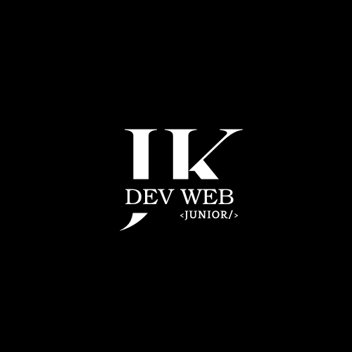

À propos de moi
Diplômes
Contact
Loisirs
Expériences
Diplômes
.Développeur Web et Web Mobile (BAC +2) - 2022
.Technicien Supérieur Système et Réseau (BAC +2) - 2020
.Adjoint de sécurité - 2017
.Baccalauréat STMG - Spécialité gestion & finance - 2016
XP
.POEC développeur Cybersécurité (3 mois): Apprentissage JAVA, Python, Administration système, sécurité
.Technicien informatique - ECONOCOM (06/2022 - 09/2022): Déploiement de poste informatique KRYS et PROCOPI
.Stage développement Web(12/2021 - 01/2022): Participation au développement d'une application Web : correction de code, ajout de fonctionnalités.
Langages : PHP Symfony, HTML, CSS, Javascript
.Technicien proximité - TIBCO Services (02/2021 - 04/2021): Déploiement de poste informatique pour le client Rennes métropole. Transfert de données, environnement Windows, prise de RDV avec clients.
.Stage Pole Informatique - Mairie Vern-sur-Seiche (09/2020 - 11/2020): Administration GLPI, mise en place de CENTREON, Maintenance et assitance informatique.